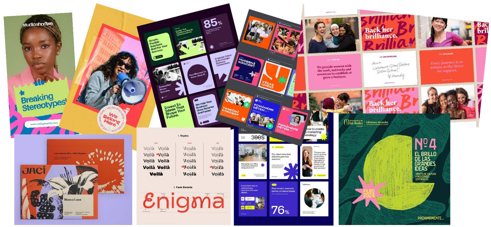

Stiftelsen
WE
PROSESS
Innledende brief
Møte med Ragnhild Slettner ga rammen for prosjektet: seriøst, men lekent og fargerikt — uten fastsatt visuell retning. Oppdraget var å utvikle en helhetlig visuell identitet for Stiftelsen WE, en nyetablert sosial stiftelse som bygger broer mellom næringsliv og sosialt entreprenørskap.
Brieven åpnet for stor designfrihet, men stilte krav til et uttrykk som skulle fungere for to svært ulike målgrupper: næringslivspartnere og kvinner i sårbare livssituasjoner.
Innsikt
Konkurrentanalyse, posisjoneringskart og SWOT kartla markedet og identifiserte WEs unike posisjon.
Målgruppe
Kvinner uten nettverk
Kvinner uten utdanning, erfaring eller nettverk. Identiteten må oppleves trygg og inkluderende — uten å virke veldedig eller stigmatiserende.
Næringslivsaktører
Virksomheter og samarbeidspartnere WE ønsker å engasjere. Overfor dem må identiteten signalisere profesjonalitet, struktur og troverdighet.
To ulike behov
WE henvender seg til to målgrupper med ulike behov. For målgruppen må identiteten oppleves trygg og inkluderende. For næringslivet må den signalisere profesjonalitet, struktur og troverdighet.
Konkurrentanalyse
Analyserte aktører
Kavlifondet, Røde Kors, Ferd, FOKUS Kvinner, Amnesty, Care Norge
Aktørene er valgt fordi de opererer innen filantropi, sosialt arbeid og samfunnsutvikling — områder som overlapper med Stiftelsen WEs formål. De representerer ulike tilnærminger til sosial påvirkning og gir et relevant sammenligningsgrunnlag.
Røde Kors, CARE og Amnesty er etablerte organisasjoner med tydelige budskap og sterk visuell kommunikasjon, orientert mot krisehjelp og rettigheter. FOKUS Kvinner har et mer spesialisert likestillingsfokus med et litt mer lavmælt uttrykk.
Hva skiller WE?
Ferd og Kavlifondet kombinerer næringsliv og samfunnsansvar, men WE skiller seg ved å ha en tydelig kobling mellom kvinner, arbeid og relasjonsbasert samarbeid med næringslivet. WE posisjonerer seg i skjæringspunktet mellom det profesjonelle og det menneskelige — og identiteten er designet for å bære den dobbeltheten.
Posisjoneringskart & Moodboard


SWOT-analyse
Styrker
- Tydelig visjon om å styrke kvinners selvstendighet
- Styret består av erfarne sosiale entreprenører
- Opererer utenfor offentlige structures — rask og selvstendig
- Internasjonalt nedslagsfelt gir bredere påvirkning
Svakheter
- Begrenset synlighet som nyetablert organisasjon
- Mangler stabil finansieringsstruktur
- Må vise til konkrete resultater for å tiltrekke donorer
Muligheter
- Økende interesse for sosial bærekraft i næringslivet
- Sosiale medier som effektiv plattform for synlighet
- Partnerskap med andre stiftelser og aktører
Trusler
- Høy konkurranse om støtte fra samme givermiljø
- Usikker global økonomi påvirker givernes kapasitet
- Skepsis til nye aktører fremfor etablerte organisasjoner
Ekspertintervju
Nøkkelinnsikt fra ekspertintervju
Vi intervjuet designer Cecilie Melli for å få et eksternt blikk på identiteten. Hun har erfaring med å balansere kreativitet og profesjonalitet, og ga verdifulle strategiske innspill.
Hun stilte spørsmålet: «Hvem skal føle seg trygge når de ser dette?»
Uttrykket hadde energi, men manglet tyngde og ga assosiasjoner til noe midlertidig. Hun påpekte at identiteten må signalisere stabilitet, ansvar og tillit — spesielt i møte med næringslivet.
Melli fremhevet viktigheten av å kommunisere kvalitet, konsistens og kontroll — ikke bare kreativitet. Hun anbefalte en mer dempet fargepalett, færre kontraster og tydeligere struktur i typografi og layout.
Dette ble et vendepunkt i prosessen. Vi utviklet et mer balansert, moderne og tillitsvekkende uttrykk — og begynte å se identiteten som et strategisk verktøy, ikke bare et visuelt uttrykk.

Identitetsutvikling
Derfor gikk vi videre med den endelige retningen. Vi beholdt noe av det myke og inkluderende uttrykket, men gjorde identiteten mer nedtonet, strukturert og tydelig. I stedet for det tidligere formelementet utviklet vi et mer kontrollert visuelt system, med mørke grønntoner, lilla som aksent og et nettverksmønster som bedre symboliserer koblingen mellom kvinner, næringsliv og sosiale entreprenører. Den endelige løsningen føltes derfor mer relevant for Stiftelsen WE, fordi den balanserer varme og inkludering med profesjonalitet og tillit. På nettsiden beskrives dette også som et vendepunkt i prosessen, der identiteten måtte fungere som et strategisk kommunikasjonsverktøy, ikke bare som et visuelt uttrykk.
I første utkast jobbet vi med et uttrykk som i større grad gikk i lilla, kombinert med en logo med myke og avrundede former. Vi utviklet også et eget formelement som skulle brukes på tvers av flatene og fungere som en visuell forlengelse av logoen. Tanken var at formelementet skulle tilføre bevegelse, energi og gjenkjennelighet i identiteten. I PDF-en vises dette blant annet gjennom den lilla og limegrønne fargepaletten, samt et grafisk formelement som ble testet på bilder og ulike flater.
Etter hvert så vi likevel at dette uttrykket ikke fungerte godt nok for Stiftelsen WE. Formelementet tok mye oppmerksomhet og passet ikke helt med den retningen vi ønsket at identiteten skulle ha. Det første utkastet hadde energi, men det opplevdes også litt for lekent og mindre troverdig enn det organisasjonen trengte. Siden WE både skal nå kvinner som trenger støtte og næringslivsaktører som mulige samarbeidspartnere, måtte uttrykket være mer trygt, seriøst og profesjonelt.
Refleksjon
Vendepunkt
Vendepunktet i prosessen kom da vi identifiserte et misforhold mellom uttrykk og formål. Det første utkastet hadde visuell energi, men manglet tilstrekkelig tyngde og troverdighet. Vi hadde prioritert et ekspressivt uttrykk fremfor å bygge tillit.
Strategisk justering
Dette førte til en tydelig kursendring, der identiteten ble utviklet som et kommunikasjonsverktøy med klar funksjon: å fungere for to ulike målgrupper med ulike behov.
For næringslivet måtte uttrykket signalisere profesjonalitet og stabilitet. For målgruppen måtte det oppleves inkluderende, trygt og relevant. Identiteten ble derfor utviklet for å svare på to spørsmål samtidig:
Kan vi stole på dere? og Er dette for meg?
Refleksjon
I arbeidet med å sikre troverdighet og tydelighet har uttrykket en bevisst balanse mot det trygge. Dette gir en robust og anvendelig identitet, men kan i enkelte sammenhenger oppleves noe kontrollert. Det åpner for videre utvikling, der uttrykket kan utfordres og gis mer særpreg uten å miste sin funksjon.
Læring
- Dobbel målgruppe krever tydelige prioriteringer fra start
- Retning må forankres i funksjon, ikke kun uttrykk
- En sterk identitet ligger i et konsistent system, ikke enkeltstående elementer